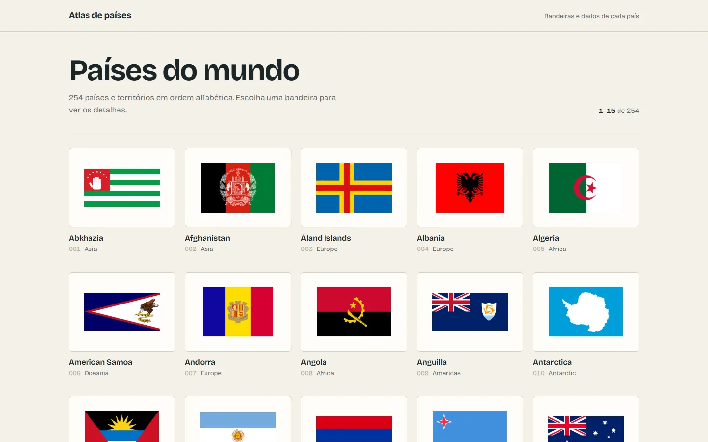
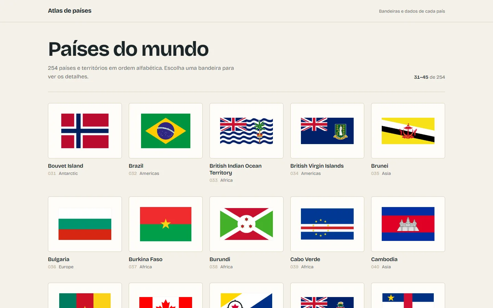
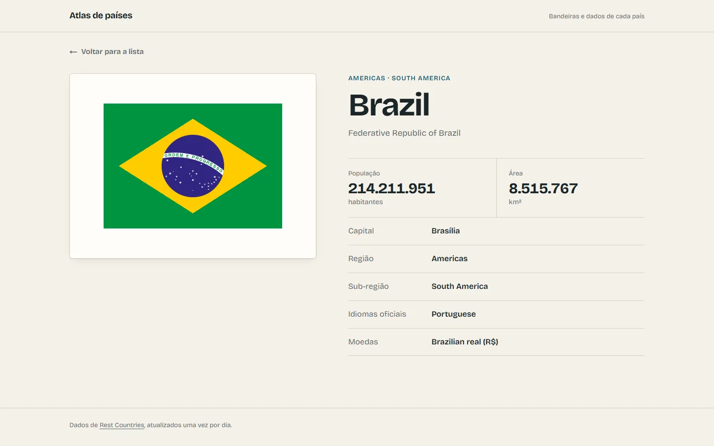
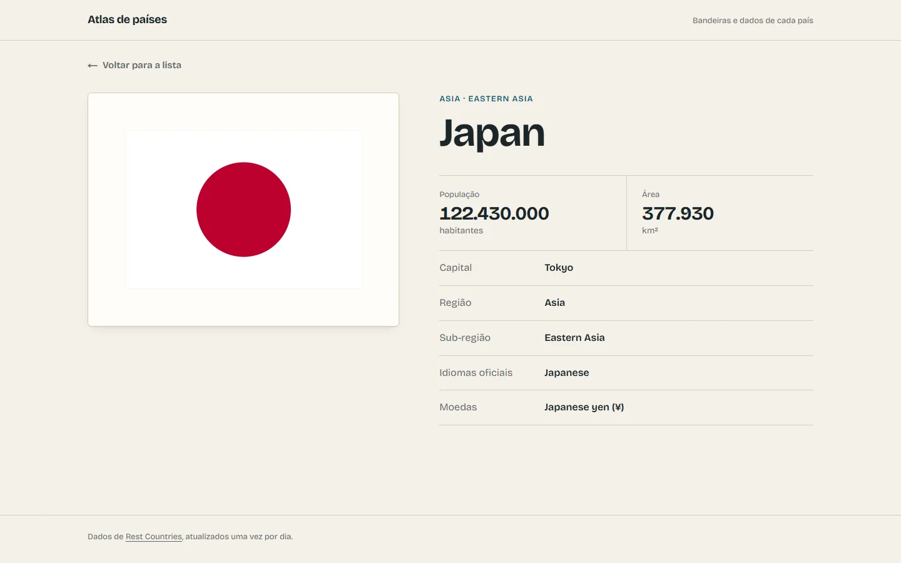
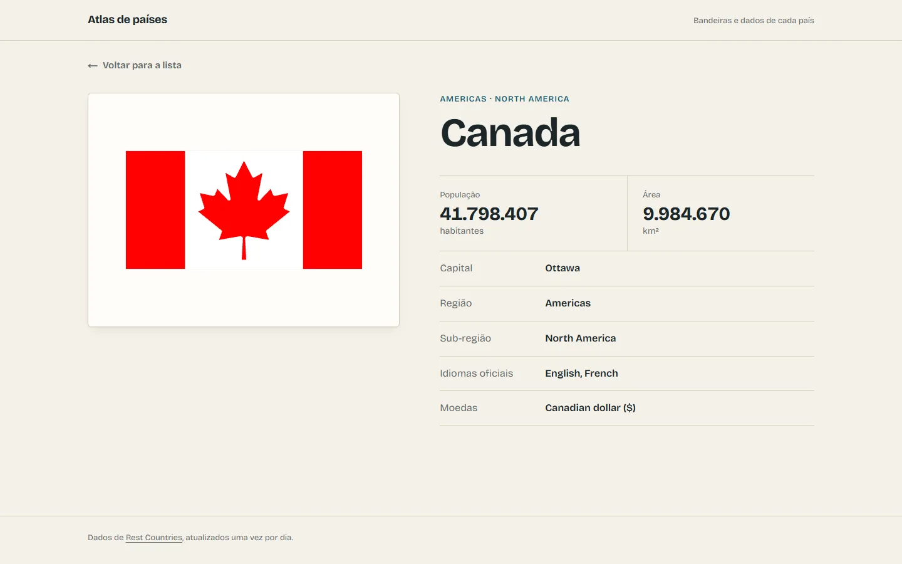
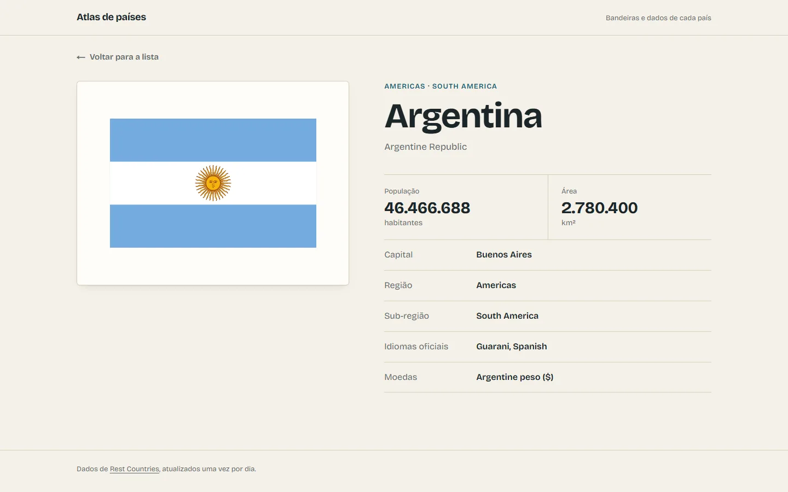
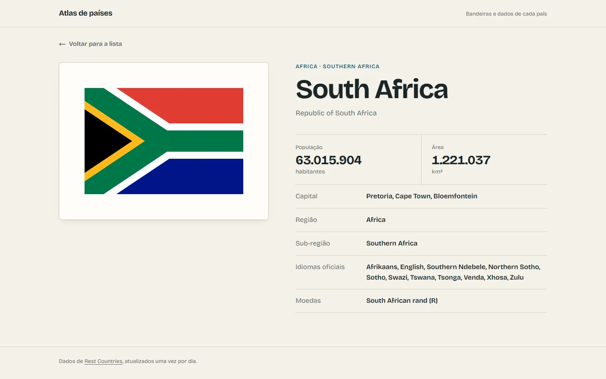
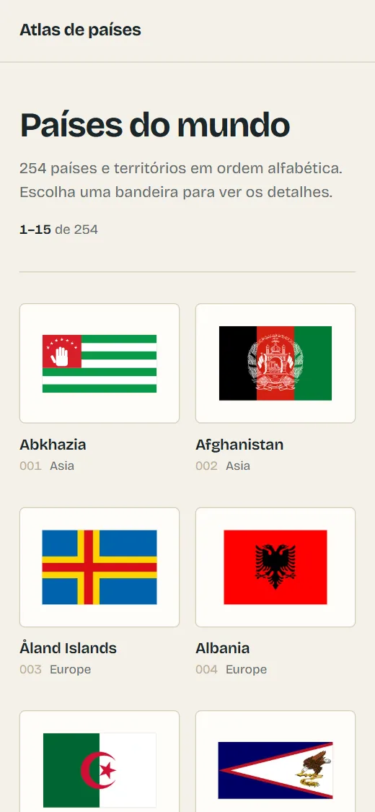
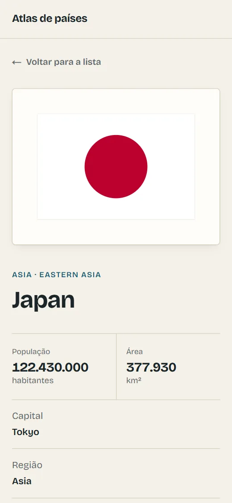

← Projetos da Etec
Programação Web III
Atlas de países
Os 254 países e territórios com bandeira, paginação e página de detalhes, consumindo a API REST Countries com cache diário.
- Matéria
- Programação Web III
- Escola
- Etec Dr. Demétrio Azevedo Jr.
- Tecnologias
- Next.js, Server Components, API REST

Como funciona
As páginas são geradas no servidor (Server Components), que busca os dados na API REST Countries e guarda em cache por um dia. Assim o site fica rápido e não consulta a API a cada visita. Cada país tem página própria com capital, população, área, região, idiomas e moedas.






No celular

